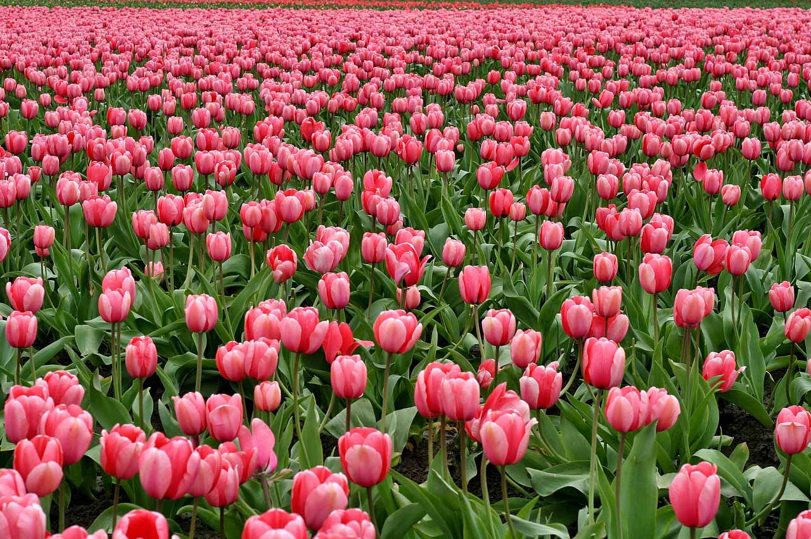
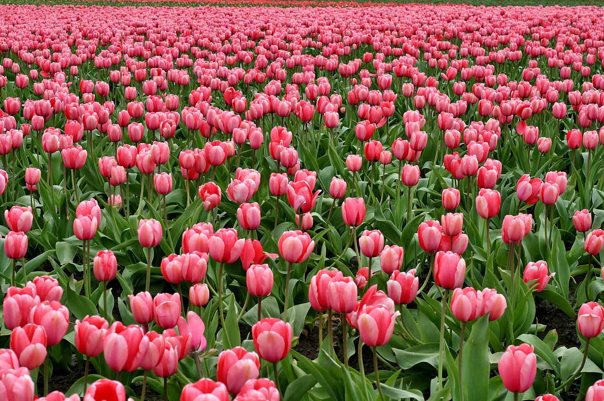
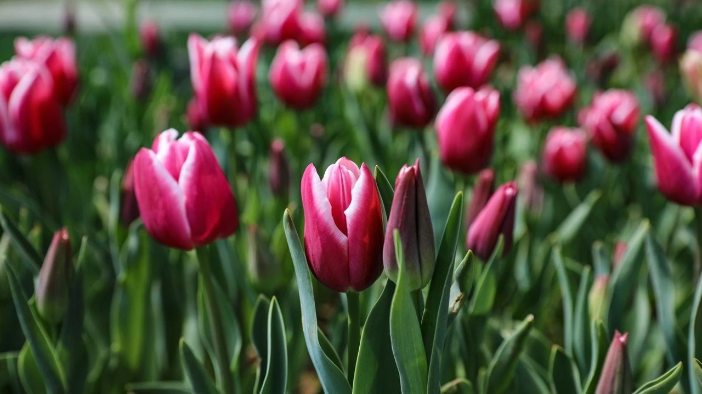
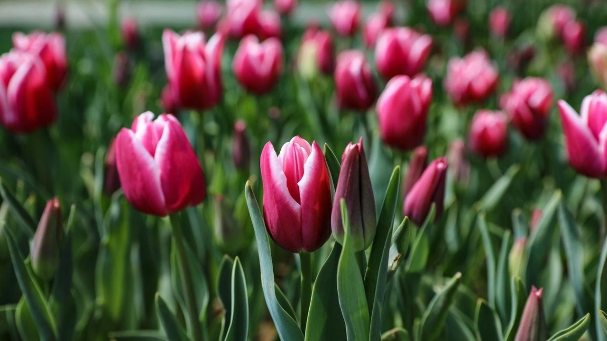

Lale Bitkisi İle İlgili Bilgiler
Lale (Tulipa), zambakgiller (Liliaceae) familyasından Tulipa cinsini oluşturan güzel çiçekleri ile süs bitkisi olarak yetiştirilen, soğanlı, çok yıllık otsu bitki türlerinin ortak adı. Anavatanı Pamir, Hindukuş ve Tanrı dağlarıdır[1]. Türkler göçleri esnasında bu bitkinin soğanlarını Anadolu'ya getirmiştir. 1500'lü yıllarda Avrupa'ya Anadolu'dan giden lale özellikle Hollanda'da çok yaygındır. Soğanlarının üzerinde zarımsı bir örtü bulunur. Etli ve yeşil 2-8 yaprağı vardır. Çiçekler, saplar ucunda çoğunlukla bir, bazen ikidir.Kırmızı, sarı ve ara tonlarda renklere sahiptir. 16. yüzyılda Kanuni Sultan Süleyman tarafından Hollanda Kralı'na gönderilen laleler, ilk başta Hollandalıları ve kısa zaman içerisinde tüm Avrupalıları hayranlık içinde bırakmışlardır. Böylece günümüze kadar dünyanın en fazla lale üreten ülkesi Hollanda olmuştur.
"Lale" adı, Türkçeye Farsçada "gelincik" ya da "Anemon" anlamına gelen لاله (lāle) kelimesinden geçmiştir ki bu kelimenin de kökeni Eski Farsçada "kırmızı şey" anlamına gelen "alālag" sözcüğüdür. Farsçada ve Osmanlıcada kırmızı anlamına gelen "lâl" kelimesi de aynı kökten gelmektedir. "Lale" sözcüğü, esasen "gelincik veya Manisa lalesi" anlamına gelirken anlam kaymasına uğrayarak 17. yy'dan itibaren bugünkü anlamını almıştır. Günümüzde lale adı verilen Tulipa cinsi bitki, 17. yy'dan önce Türkiye'de görülmemiştir. Lale, özellikle Doğu kültür ve mitolojilerinde özel bir yere sahiptir. Edebi eserlerde sıkça kullanılmasının yanı sıra mitolojilerde de lalenin ortaya çıkışına dair farklı ve çok çeşitli hikâyeler bulunmaktadır. Bunların en ünlüsü ve özellikle doğu edebiyatında en sık kullanılanı Pers mitolojisindeki lalenin kökeni söylencesidir. Bu söylenceye göre yaprağın üstündeki bir çiğ tanesine yıldırım düşmüş, böylece çiğ tanesi ve yaprak alev almıştır. Daha sonra donarlar ve lale meydana gelir. Bu hikâyeden yola çıkarak, lale çiçeğinin ortasındaki koyuluğun bu yanma işleminin sonucu olduğuna inanılırdı.
 
